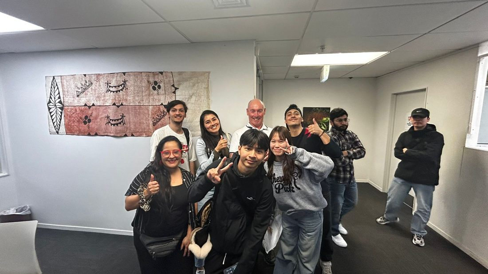
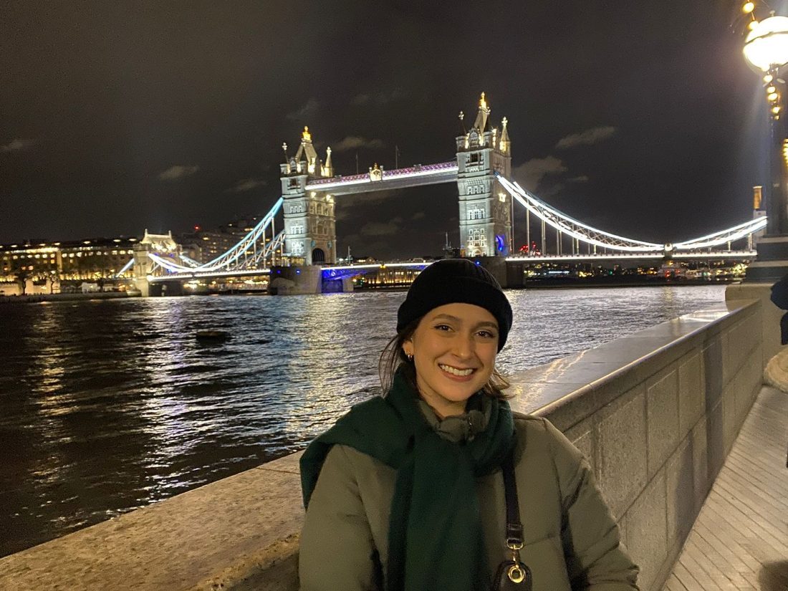

IELTS
Clases de preparación, simulacros de Speaking con feedback y materiales digitales para estudiar con estrategia.
Conoce IELTS →INGLÉS CON PROPÓSITO
El inglés que necesitas para cumplir tus metas personales y profesionales. Clases online, preparación IELTS y experiencias para mirar más allá de las fronteras.
ENCUENTRA TU CAMINO
Cada objetivo es distinto. Explora cómo puedo acompañarte en el tuyo.
Clases de preparación, simulacros de Speaking con feedback y materiales digitales para estudiar con estrategia.
Conoce IELTS →Clases online individuales y grupales, inglés laboral, conversación y cursos según tu nivel y tus objetivos.
Explora tus opciones →Experiencias y recomendaciones para quienes sueñan con viajar y vivir nuevas oportunidades, con especial atención a Irlanda.
Descubre más →PREPARACIÓN IELTS
He rendido IELTS Academic tres veces y combino esa experiencia como candidata con mi formación docente para ayudarte a prepararte.
INGLÉS PARA LA VIDA
Clases 100 % online con acompañamiento personalizado, ya sea para desenvolverte en el trabajo, viajar, conversar o avanzar de nivel.
¿No sabes por dónde empezar? Haz tu autoevaluación ↗
EXPERIENCIAS INTERNACIONALES
Historias, aprendizajes y recomendaciones para explorar oportunidades en el extranjero, especialmente experiencias relacionadas con Irlanda y Working Holiday.
Las asesorías individuales sobre Working Holiday todavía no están disponibles.
Acompaña mis experiencias en Instagram ↗VOCES REALES
Testimonios compartidos con autorización. Las palabras se presentan tal como fueron escritas, sin pantallazos de conversaciones.

TESTIMONIO 01 · PALABRAS ORIGINALES
Uno de mis sueños desde siempre ha sido poder comunicarme en inglés; desde niño me ha interesado conocer otras culturas y entendí que una de las herramientas principales para lograrlo era el idioma, por eso decidí comenzar este proceso con Miss Mel. Hoy me encuentro en Auckland, Nueva Zelanda, y sin sus enseñanzas todo habría sido mucho más complicado desde el primer día: pude comunicarme con la policía internacional sin problemas, recorrer la ciudad e incluso pedir comida en un restaurante. Gracias a Mel perdí el miedo a hablar inglés en público y, en solo unos días, pude hacer amigos y encontrar trabajo, algo que sinceramente no habría sido posible sin su apoyo, paciencia y dedicación. Llegué a sus clases con un nivel A1–A2 y, al rendir la prueba en Auckland, fui clasificado con un nivel B1–B1+, lo que fue una grata sorpresa y la confirmación de que mi inglés había mejorado significativamente gracias a clases didácticas, funcionales y especializadas según mi propio progreso. Con mucho cariño, Beto.
Desplázate dentro del texto para leerlo completo.
TESTIMONIO 02 · PALABRAS ORIGINALES
Mis clases con la Miss Melanie han sido geniales. Nos enfocamos principalmente en la preparación para el IELTS Academic, ya que necesito alcanzar un buen resultado para cumplir un objetivo profesional en el extranjero. Desde el comienzo, me explicó las diferencias entre el General Training y el Academic y, clase a clase, fuimos trabajando de manera personalizada en las áreas que más necesitaba reforzar.
Comenzamos con las estructuras de Speaking y Writing y, poco a poco, fuimos avanzando hacia un vocabulario más amplio y académico, siempre teniendo como meta alcanzar un Band 8.
Lo que más me gustó de sus clases es que nunca se sintieron como simplemente estudiar contenidos o seguir una pauta. Melanie se tomó el tiempo de conocer mis objetivos, entender lo que este proceso significa para mí y acompañarme también desde lo personal. Siempre tuvo palabras de aliento, me ayudó a sacar lo mejor de mí y, sobre todo, a confiar mucho más en mis capacidades y a “creérmela” un poquito más.
¡Totalmente! De hecho, recomendaba a la Miss Melanie incluso antes de tomar clases con ella, porque siempre la he considerado un ejemplo a seguir, tanto como profesora como persona. Después de haber sido su alumna, la recomiendo aún más.
Es una profesora tremendamente preparada, comprometida y se nota el cariño y la dedicación que pone en cada una de sus clases. Aprendí muchísimo con ella, no solo en cuanto a contenidos y estrategias para el IELTS, sino también a confiar más en mis propias capacidades.
Estoy muy agradecida por todo lo que me enseñó, pero especialmente por la forma en que me acompañó durante este proceso, alentándome constantemente a creer más en mí y en que sí puedo alcanzar el objetivo que me propuse.
Desplázate dentro del texto para leerlo completo.

TESTIMONIO 03 · PALABRAS ORIGINALES
Tomé clases de preparación para el IELTS con la miss Melanie en 2019. Las clases no solo fueron muy dinámicas y completas, sino también entretenidas, lo que me motivó a mantener la constancia y a ser perseverante en el proceso de aprendizaje.
Superé los resultados que esperaba en mi examen IELTS. Lo rendí por primera vez en 2019 y obtuve un puntaje total de 7. Debido a la pandemia, tuve que suspender mi postulación a estudios en el extranjero, pero retomé el material y las preguntas preparadas por la miss Melanie en 2020 y rendí nuevamente el examen en 2021, obteniendo un puntaje final de 7.5. Gracias a ello, pude viajar a Inglaterra para realizar un Magíster en Development Studies, Public Policy and Governance en el Institute of Development Studies de la University of Sussex. La preparación me permitió llegar con una base sólida de inglés para estudiar temas relacionados con políticas públicas y desarrollo, y titularme del magíster con dos puntos de distinción.
La recomiendo totalmente. Por un lado, te ayuda a alcanzar los resultados que necesitas, y por otro, hace que el proceso de estudio sea muy entretenido. Sin duda, nunca olvidaré mi experiencia de preparación con ella.
Desplázate dentro del texto para leerlo completo.
SOBRE MÍ
Soy Profesora de Estado en Inglés de la Universidad de Santiago de Chile (USACH), con estudios en la University of Bristol, Reino Unido.
He rendido el IELTS Academic en tres ocasiones, con resultados equivalentes a niveles C1 y C2. Mi propósito es acompañarte con herramientas útiles, estrategias y clases adaptadas a lo que quieres lograr.
Conóceme en Instagram ↗EL PRÓXIMO PASO
Cuéntame qué necesitas y conversemos sobre la mejor manera de avanzar con tu inglés.
Escribir por WhatsApp